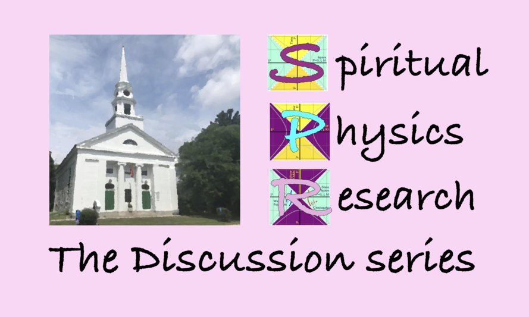

Friday, Feb. 26, 7:00-8:30 PM!
Zoom with us at bit.ly/SPR_zoom

An effort by First Church Unitarian, Littleton, MA
Rev. Lara Hoke will provide a spiritual framework.
Doug Sweetser will bring on the simple but odd math.
Topics:
- The 5 most important equations in all of physics Slides or 47' video
- Relativity, what we disagree on, calculations we agree on
- A new road to gravity
- Quantum mechanics wierdness and mirrors
- Visualizing physics
The site
You are here! bit.ly/SPR_site
Slides
Videos
T-shirts
These are not a good deal, but research like this that has taken decades is expensive. With the fees and all, the t-shirts cost some $30, while the hoodie clocks in at $50. Ouch. Still, nothing like these anywhere else on the planet. Consider it :-)